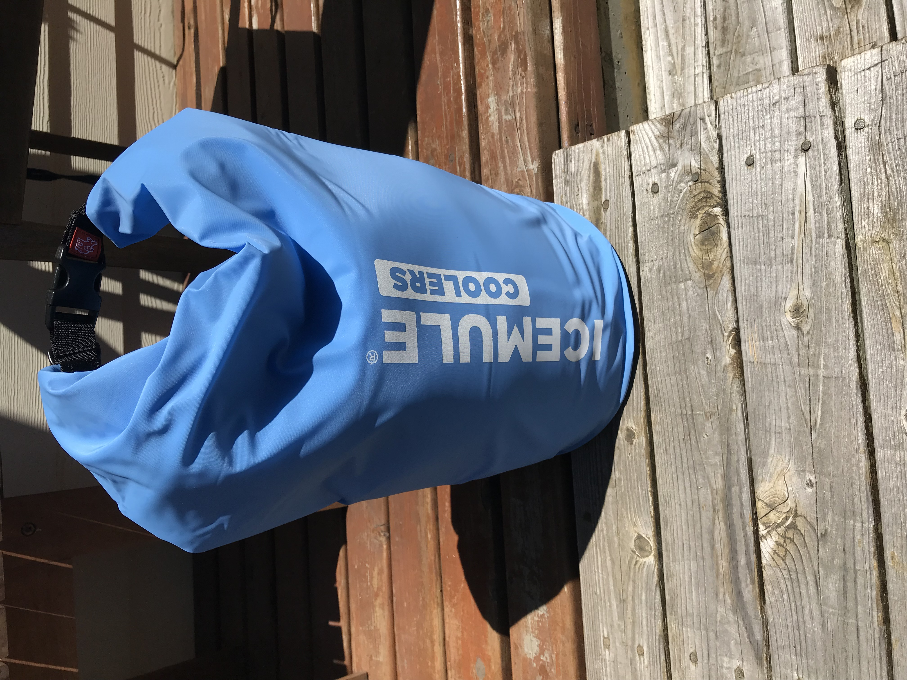

Table of Contents
Overview
This softside, backpack cooler by Icemule is intended to be a convenient and easy to transport cooler for short day trips when dragging full sized cooler isn't needed. The Classic Medium is a 15 litre capacity cooler that the manufacturer claims can hold 12 cans with the necessary ice for 24 hours of cooling.
Unlike other softside coolers, this cooler has no zippers, but rather the top rolls down and staps similar to a dry-bag used in water sports. Once loaded, you roll the top of the cooler down to the level of the ice, and clip it shut. Air escapes from the inside of the cooler via a valve (pictured) and once clipped, the valve is closed. The lack of structure to this cooler is actually a useful feature because as you use the contents of the cooler, it becomes smaller and more packable.
The Icemule Medium can be stashed in the hatch of an average kayak as well. The flexible, compressible structure as well as the lack of zippers (which can leak), make this a good option for kayakers.
The product can be viewed here:
First Impression
The build quality of this cooler is solid, with strong stiching and strap clip points firmly glued to the body of the cooler giving the impression that the straps can withstand being carried, swung or otherwise stressed while loaded with 20 pounds of ice and cans. The bottom of the cooler, which will rest on the ground, is a ruggedized vinyl that seems like it will not struggle to withstand sand, gravel, rocks and other surfaces this cooler is likely to be placed on.
The included straps are comforable and provide an ergonomic way to transport 12 cans with ice in situatoins where youre carrying the cooler over distances, like say going to the beach where you commonly have to park significant distances from the actual shoreline.
Capacity Test
We found that the manufacturer's claims of capacity for 12 cans plus "ice" to be true, although the amount of ice is not defined in this claim. With the average bag of ice weighing 8-10 lbs, we assumed the average user would be picking up such a bag at a mini mart and throwing the full bag of ice in with the 12 cans. This amount of ice fits with 12 cans and was validated by our testing.
Ice Retention Test
Test Overview
We tested this cooler's ability to hold ice under average summer conditions over a 24 hour period, beginning at noon. As with all tests we do, the average high temperature was approximately 80-85 degrees, the average low was approximately 60-65 degrees. The cooler was exposed to a mixture of direct sunlight, shade and some cloud obstructed sunlight over the test period simulating an average campsite, boat deck or other outdoor usage scenario. Exposure to hotter temperatures or more direct sunlight without shade will obviously alter ice retention results.
Test results
The cooler was placed into the test conditions with 8.05 lbs of ice and after 24 hours had retained 1.47 lbs, translating to roughly a 18% ice retention rate, certainly enough to get you through the average day at the beach or the typical single-day use for this cooler. The manufacturer claims the cooler will hold ice for 24 hours which has been validated. As with all coolers, warmer temps will alter these results, but its reasonable to believe based on these results, even in warmer temps, this cooler will hold ice for most of the day.
Summary
The Ice Mule Classic- Medium provides a comfortable way to carry ice and drinks in a compressible, packable design. It's capable of holding ice for a full 24 hours, well built and a good value for times when you only need a day trip's worth of ice and dont want to carry the weight and bulk of a soft side cooler built to hold ice for 2+ days. For this purpose, at this price point, the Ice Mule line meets the mission.
Key Points
- Ice Retention for 24 hours and beyond - Confirmed by test
- Capacity for 12 cans + 8 pounds of ice - Confirmed by test
- Stores flat, saving space
- Packable, compressible, light weight, comfortable to carry while loaded